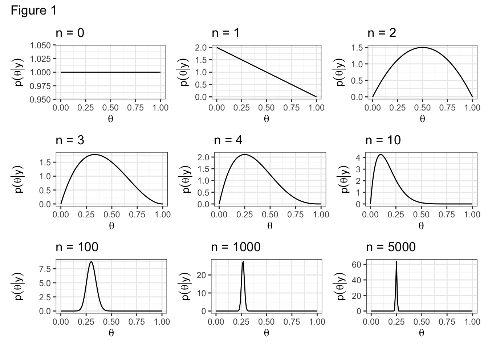
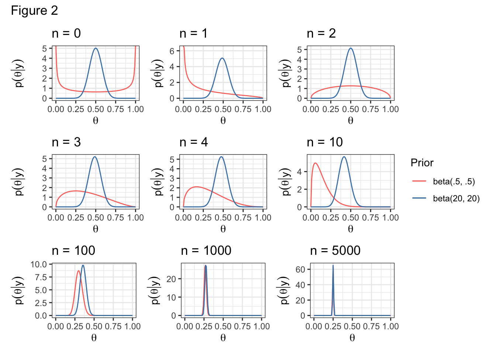

[1] 0 1 0 0 0 0 0 0 0 0Is this a fair coin?
library(tidyverse)
library(latex2exp)
library(glue)
library(patchwork)
set.seed(3)
flips = rbinom(5000, size = 1, prob = 0.25)
flips %>% head(10)We observe 10 flips from the same coin above, where 0 is “tails” and 1 is “heads”. In summary, we see Y = 1 heads in 10 coin flips. Is this a fair coin?
To articulate this mathematically, let \(\theta \in [0, 1]\) be the bias-weighting (the chance of heads) of the coin. Fundamentally, we want \(p(\theta | y)\), which we can expand via Bayes’ rule,
\[ p(\theta | y) = \frac{p(y|\theta) p(\theta)}{\int_{\theta \in \Theta} p(y|\theta) p(\theta) d\theta} \]
Exercise
Label the following on the equation above.
Likelihood: the data generative process. The probability (or density) of the data given the model. Most often thought of as a function of the parameter.
Prior: Our a priori (beforehand) beliefs about the true population characteristics.
Posterior: Our a posteriori (afterwards) beliefs about the true population characteristics after having observed the data set \(y\).
Normalizing constant: A number that enables a pmf or pdf to integrate to 1.
Uniform prior
Let \(y\) be the number of heads in \(n\) coin flips.
\[ p(\theta | y) \propto \theta^{y}(1-\theta)^{n-y} \]
This is the kernel of a ___ density, where \(\alpha = y + 1\) and \(\beta = n - y + 1\), hence
\[ p(\theta | y) = \frac{\Gamma(n + 2)}{\Gamma(y + 1)\Gamma(n-y+1)} \theta^{y}(1-\theta)^{n-y} \]
and the posterior mean is \(\frac{y + 1}{n + 2}\) and the posterior variance is \(\frac{(y+1)(n - y + 1)}{(n + 2)^2 (n + 1)}\).
Let’s examine how the posterior evolves with each successive coin flip.

N = c(0, 1, 2, 3, 4, 10, 100, 1000, 5000)
for (i in seq_along(N)) {
n = N[i]
if(n == 0) {
y = 0
}
else {
y = sum(flips[1:n])
}
x = 0:1 # range
df = data.frame(x)
assign(paste0("p", i),
df %>%
ggplot(aes(x = x)) +
stat_function(fun=dbeta,
args = list(shape1 = y + 1, shape2 = n - y + 1)) +
labs(y = TeX("$p(\\theta | y)$"), x = TeX("$\\theta$"),
title = glue("n = {n}")) +
theme_bw()
)
}
(p1 + p2 + p3) /
(p4 + p5 + p6) /
(p7 + p8 + p9) +
plot_annotation(title = "Figure 1")Conjugacy
If \(\theta \sim\) Uniform(0, 1) then \(p(\theta)\) = 1 for all \(\theta \in [0, 1]\).
Similarly, if \(\theta \sim\) beta(1, 1), then \(p(\theta) = 1\).
Claim:
If
\[ \begin{aligned} \theta &\sim \text{beta}(a, b)\\ Y | \theta &\sim \text{binomial}(n, \theta) \end{aligned} \]
then
\[ p(\theta | Y) \sim \text{beta}(y + a, n - y + b) \]
Definition
A prior \(p(\theta)\) is said to be conjugate to the data generative model \(p(y|\theta)\) if the family of the posterior is necessarily in the same family as the prior. In math, \(p(\theta)\) is conjugate to \(p(y|\theta)\) if
\[ p(\theta) \in \mathcal{P} \implies p(\theta | y) \in \mathcal{P} \]
While conjugate priors make calculation easy, they may not accurately reflect our prior beliefs.
Exercise
Prove the claim above.
Other priors
Incidentally, people are often satisfied with the choice of likelihood but are worried about the choice of prior.
Let’s examine the effect of another couple of priors.
Given the coin’s dubious origin, we might believe a priori that the coin is biased. How could we represent this belief?
\[ \theta \sim \text{beta}(.5, .5) \]
Or alternatively, we might be strongly believe a priori that the coin is fair. How could we represent this belief?
\[ \theta \sim \text{beta}(20, 20) \]

Exercise
How would you update the code of the previous example to show posterior inference under the prior \(\theta \sim\) beta(2,3)?
Prior data
In the example above, the parameters, a and b, of the conjugate prior are often thought of as prior data.
- a: “prior number of 1s”
- b: “prior number of 0s”
- a + b: “prior sample size”
Exercise
We saw above that when a = 20 and b = 20, we needed more data to move the posterior.
Show that the posterior mean, \(E(\theta | y) = \frac{a + y}{a + b + n}\) converges to the sample average as \(n \rightarrow \infty\).
Posterior summaries and reliability
Laplace approximation
Posterior mode: sometimes called “MAP” or “maximum a posteriori” estimate, this quantity is given by \(\hat{\theta} = \arg \max_{\theta} p(\theta | y)\).
- Notice this unwinds to be \(\hat{\theta} = \arg \max_{\theta} p(y | \theta) p(\theta)\).
Exercise
- Show that, for the uniform prior, \(\hat{\theta} = y / n\)
- Compare to maximum likelihood estimate (MLE); see notes on likelihoods
One way to report the reliability of the posterior mode is to look at the width of the posterior near the mode, which we can sometimes approximate with a Gaussian distribution:
\[ p(\theta | y) \approx C e^{\frac{1}{2} \frac{d^2L}{d\theta^2}|_{\hat{\theta}} (\theta - \hat{\theta})^2} \]
where \(C\) is a normalization constant and \(L\) is the log-posterior, \(\log p(\theta | y)\).
Taken together, the fitted Gaussian with a mean equal to the posterior mode is called the Laplace approximation.
- Let’s derive the Laplace approximation offline
Confidence regions
Definition
Let \(\Phi\) be the support of \(\theta\). An interval \((l(y), u(y)) \subset \Phi\) has 95% posterior coverage if
\[ p(l(y) < \theta < u(y) | y ) = 0.95 \]
Interpretation: after observing \(Y = y\), our probability that \(\theta \in (l(y), u(y))\) is 95%.
Such an interval is called 95% posterior confidence interval (CI). It may also sometimes be referred to as a 95% “credible interval” to distinguish it from a frequentist CI.
Contrast posterior coverage to frequentist coverage:
Definition
A random interval \((l(Y), u(Y)\)) has 95% frequentist coverage for \(\theta\) if before data are observed,
\[ p(l(Y) < \theta < u(Y) | \theta) = 0.95 \]
Interpretation: if \(Y \sim P_\theta\) then the probability that \((l(Y), u(Y)\) will cover \(\theta\) is 0.95.
In practice, for many applied problems
\[ p(l(y) < \theta < u(y) | y ) \approx p(l(Y) < \theta < u(Y) | \theta) \]
see section 3.1.2. in the book.
High posterior density
Definition
A \(100 \times (1-\alpha)\)% high posterior density (HPD) region is a set \(s(y) \subset \Theta\) such that
\(p(\theta \in s(y) | Y = y) = 1 - \alpha\)
If \(\theta_a \in s(y)\) and \(\theta_b \not\in s(y)\), then \(p(\theta_a | Y = y) > p(\theta_b | Y = y)\)
- Note: all points inside an HPD region have higher posterior density than points outside the region.
Exercise
Is the HPD region always an interval?